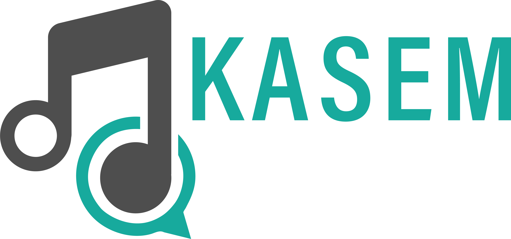

Kasem: Bringing Musical Fun to Remote Meetings
Project Overview
Kasem addresses the challenge of fostering fun and connection in remote work settings. It brings a musical twist to everyday meetings, allowing teams to share, discuss, and guess each other's musical tastes.
Visit www.kasem.work to learn more.
Origin Story
Kasem began as a manual game I facilitated for my hybrid team at Duetto, spanning Buenos Aires, Argentina and San Francisco, CA. The team's enthusiasm for the game was overwhelming.
After leaving Duetto, my former engineering manager and I transformed this beloved game into an automated Slack app, making it accessible to remote teams everywhere.
How It Works
- Post instructions to the channel with the
/kasem-helpcommand. - Submit a Spotify or YouTube link using
/kasem-addSong. - When the team completes a goal, use the
/kasem-playcommand to post a song to the channel. - Listen to the song and guess who submitted it.
- Use
/kasem-revealto see who submitted the song and learn why they chose it.

Key Features
- Slack Integration: Seamlessly fits into existing Slack workflows.
- Music Sharing: Supports both Spotify and YouTube links.
- Team Guessing Game: Encourages engagement through a fun guessing element.
- Personal Insights: Allows team members to share why they chose their songs and learn more about each other.
Impact and Personal Experience
I now bring Kasem to every team I work with, and it's become a staple after every stand-up meeting. Team members consistently advocate for playing Kasem, highlighting its positive impact on team dynamics.
My favorite aspect of Kasem is when someone shares a song with deep personal meaning. It opens up conversations and connections that might not happen otherwise. As an added bonus, I've discovered a wealth of new music through these exchanges.
Metrics (Updated 7/29/2024)
- Active Workspaces: 103
- Active Users (past 28 days): 49
Development
Kasem was built collaboratively by Laura and Stephen.
Future Directions
We're always looking to improve Kasem. Users are encouraged to reach out with feature requests or bug reports email at kasemhelpteam@gmail.com.